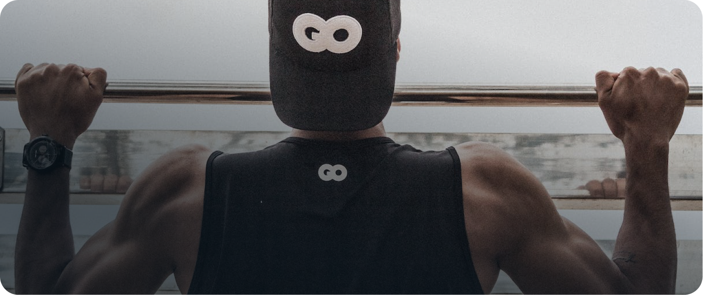
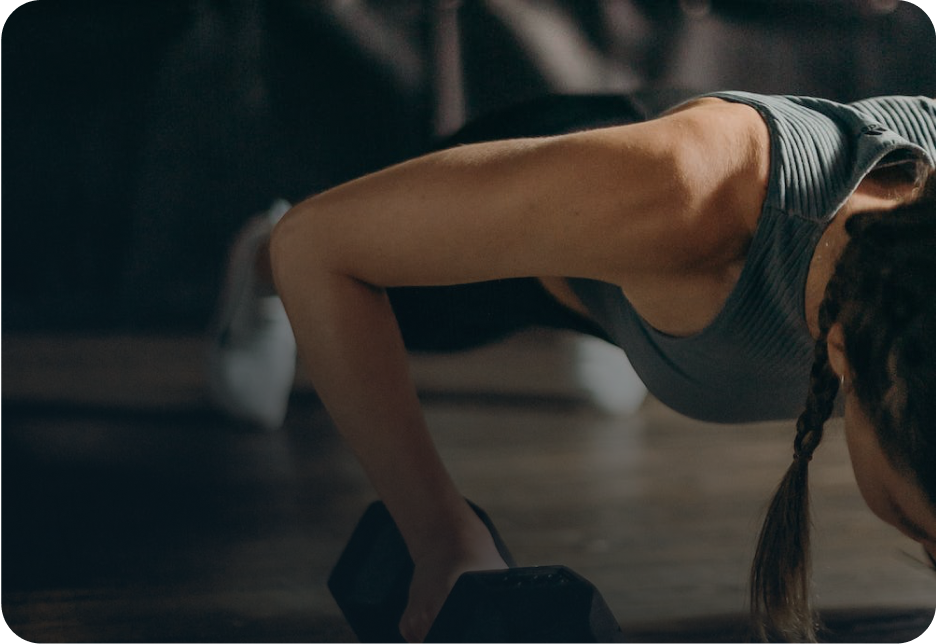

Strong together
Motivation und Begeisterung für sportliche Aktivitäten sind in einem Fitness-Kurs oft deutlich höher, als bei einem Training ganz allein. In unseren Kursen in Kiel hast du jede Menge Spaß!
Das KIELS bietet für jedes Alter und jede körperliche Verfassung passende Kurse an: Gesundheitskurse wie z. B. Rückenfitness oder Wirbelsäulengymnastik, Entspannungskurse von Yoga bis hin zu Qi Gong und jede Menge Kurse zum Auspowern wie z. B. LES MILLS®-Kurse oder Cycling.
Aktueller Kursplan
Wir bieten monatlich um die 250 Kurse an. Von Entspannung bis Ausdauerkursen steht dir eine große Auswahl zur Verfügung.
Kursplan öffnen
Bodypump ist das originale Langhantelprogramm zur Kräftigung, Formung und Straffung deines gesamten Körpers. Schon jetzt profitieren Millionen Teilnehmer von einer der weltweit schnellsten Methoden, um in Form zu kommen.
Bodypump®

Innovatives Krafttraining mit Gewichten für alle, die stärker werden wollen. Der Fokus liegt auf kontrollierten Bewegungen in Kombination mit funktionellen Übungen und dynamischem Training.
Strength Development

Mobilisations-, Kräftigungs- und Dehntraining, um die Funktion der Wirbelsäule zu optimieren und den Rücken gezielt zu stärken.
Wirbelsäulengymnastik
Ein starker und gesunder Rücken ist die Grundvoraussetzung für einen unbeschwerten Alltag. Im Kurs liegt der Schwerpunkt auf der korrekten Kräftigung der gesamten Rumpfmuskulatur.
Aufbau Rückenbildung

Yoga verbindet Körper, Geist und Seele. Eingesetzt werden geistige und körperliche Übungen, Muskelan- und -entspannung, Atemübungen und Meditation.
Yoga
Kontrollierte und bewusste Bewegungsausführung schult die Körperwahrnehmung und kräftigt besonders die tiefliegenden Muskelgruppen.
Pilates
Eine Abfolge aus Dehnungen, Bewegungen und Posen aus Yoga, Tai Chi und Pilates zu fließender Musik.
Body Balance®
Hochintensiver Fitness-Kurs mit Bewegungsabläufen für Anfänger und Fitness-Fans – Laufen, Ausfallschritte, Springen, Push-Ups und Squats.
Body Attack®
Step-Workout mit einfachen Bewegungen wie Gehen oder Treppensteigen, kombiniert mit klassischen Step-Aerobic-Elementen.
LM Step®
Ausdauer-, Kraftausdauer- und Intervalltraining auf Spinning-Bikes mit abwechslungsreichen Tempi und dynamischer Musik.
Cycling
Kräftigung, Formung und langfristige Gesundheit: ein Klassiker für Muskulatur, Ausdauer und Beweglichkeit.
Bauch Beine Po
Ausdauer und Muskulatur werden mit einfachen Schritten in einer motivierenden Choreografie kombiniert.
Step BBP
Dynamisches Powerworkout auf kleinen Trampolinen, das hunderte Muskeln beansprucht und zugleich gelenkschonend ist.
Jumping®
Schnelligkeit, Ausdauer und explosiver Kraftaufbau mit Trainingsübungen aus dem Boxsport.
Fitnessboxen
Vorgegebene Schrittfolge am Stepper zu motivierender Musik – als dynamisches Gruppentraining.
Step Workout
Cardio-Workout inspiriert von Martial Arts wie Karate, Kickboxen, Taekwondo, Tai Chi und Muay Thai.
Body Combat®
Ganzkörpertraining für mehr Flexibilität und Kraft, zur Mobilisation und zur Unterstützung der Regeneration.
Faszien Yoga
Fließende Übergänge zwischen Asanas verbinden Atmung und Bewegung zu einem dynamischen Flow.
Flow Yoga
Feste Übungsserien in gleichbleibender Abfolge – temporeich, fließend und mit genauer Atemrhythmik.
Ashtanga Yoga
Training für eine starke Körpermitte mit Fokus auf Kraft, Stabilität und Ausdauer der Rumpfmuskulatur.
LES MILLS Core®
Funktionelles Ganzkörpertraining in Blöcken mit Kraft-, Cardio- und Core-Übungen.
LES MILLS Tone®
30-Minuten-Kurs für Bauch- und Rückenmuskulatur mit abwechslungsreichen Übungen und Hilfsmitteln.
Bauch Intensiv
Tanz-Workout mit Aerobic-Bewegungen zu lateinamerikanischen Rhythmen und Tanzstilen.
Zumba®
Mobilität, Beweglichkeit und Entspannung für Muskeln und Gelenke.